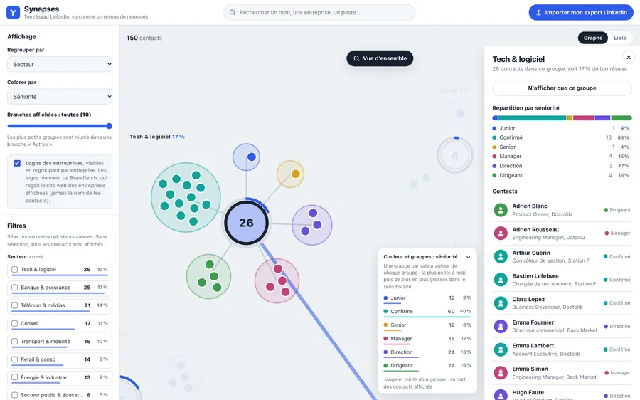
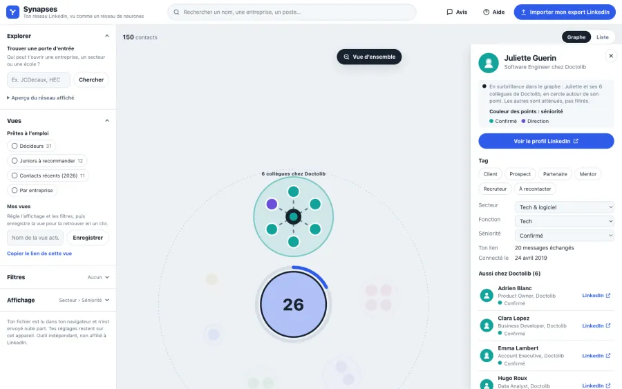
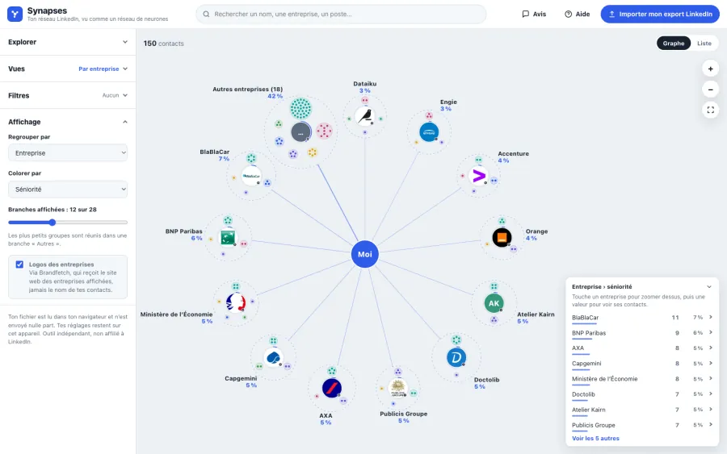
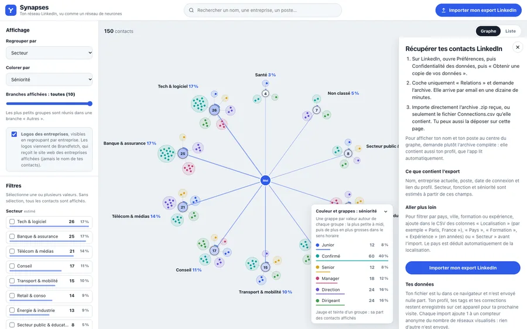

Regrouper par ce que tu veux
Secteur, entreprise, fonction, séniorité, année de connexion, ville, formation. Le graphe se reconstruit autour de toi.
Secteur
Synapses range tes contacts par secteur, entreprise et séniorité pour te montrer qui peut t’ouvrir une porte : un job, un client, un rendez-vous.
Gratuit, sans compte. Ton fichier est lu dans ton navigateur et n’est envoyé nulle part. Importer mon export
150 contacts inventés. Clique sur un secteur pour voir qui tu y connais, change la couleur des points.




Tu cliques sur un contact de Doctolib : ses collègues apparaissent, rangés par séniorité. Tu sais à qui demander une recommandation.
Tu gardes le secteur Banque et assurance et le niveau Direction : voilà les premières personnes à appeler.
Tu regroupes par entreprise et tu ouvres BNP Paribas : tous tes contacts sur place, avec leur poste, avant d’entrer en réunion.
Les branches les plus fines montrent où il te manque du monde. Ici, la santé et le secteur public.
Exemples tirés du réseau de démonstration, 150 contacts fictifs.
Sur LinkedIn : Préférences, Confidentialité des données, « Obtenir une copie de vos données ». Coche « Relations ». Ouvrir la page de LinkedIn ↗
Le .zip tel quel, quand l’email de LinkedIn arrive, en général une dizaine de minutes plus tard. Il est lu sur ton appareil.
Regroupe, colore, filtre, ouvre la fiche d’un contact. En attendant l’email, la démo marche déjà.
Secteur, entreprise, fonction, séniorité, année de connexion, ville, formation. Le graphe se reconstruit autour de toi.
Chaque point prend la couleur de sa séniorité, de sa fonction ou de son année de connexion. La légende donne les comptes.
Le curseur des branches réunit les petits groupes dans « Autres », ou affiche ton réseau entier.
Regroupé par entreprise
Secteur, fonction, séniorité, ville, formation, date de connexion, et les autres contacts de son entreprise et de son école.
Aussi chez Doctolib (6)
Coche juniors et seniors, ajoute un secteur ou une fonction : seuls restent les contacts qui passent tous les filtres.
24 contacts sur 150
Marque un contact comme client, prospect, mentor ou à recontacter, puis regroupe ou filtre par étiquette.
Aucun serveur ne reçoit ton fichier. Voici tout ce que la page peut envoyer, ligne par ligne.
| Quoi | Envoyé à | Quand |
|---|---|---|
| Tes contacts : noms, profils, emails | Personne | Jamais |
| Le domaine des entreprises, par exemple doctolib.fr | Brandfetch, pour les logos | Tant que l’option Logos est cochée. Elle l’est par défaut et se décoche en un clic. |
| Des noms d’entreprises et intitulés de poste non reconnus | L’IA que tu choisis, avec ta propre clé | Seulement si tu lances le classement par IA |
| Tes corrections de classement | Le dictionnaire partagé de Synapses | Seulement si tu coches « Partager mes corrections » |
| +1 au compteur de réseaux visualisés | Un compteur anonyme | Après un import, au plus une fois par jour |
Oui. Pas de compte, pas d’abonnement, pas de publicité. Seul le classement par IA, facultatif, utilise ta propre clé chez le fournisseur que tu choisis.
Non. C’est un outil indépendant, non affilié à LinkedIn. Il ne se connecte pas à ton compte : il lit seulement l’export que tu télécharges.
La demande prend deux minutes. L’archive des relations arrive par email, en général une dizaine de minutes plus tard.
Secteur, fonction et séniorité sont estimés. Corrige-les dans la fiche du contact : la correction s’applique à toute l’entreprise ou à tout l’intitulé de poste. Tu peux aussi affiner avec une IA, avec ta clé.
Oui. La démo s’ouvre directement sur un réseau fictif de 150 contacts, avec toutes les fonctions.
Le graphe s’adapte à l’écran, et une vue Liste reprend tout en texte. Pour récupérer et déposer l’archive, l’ordinateur reste plus pratique.
La démo tourne sur 150 contacts fictifs. Ton export, lui, reste dans ton navigateur.